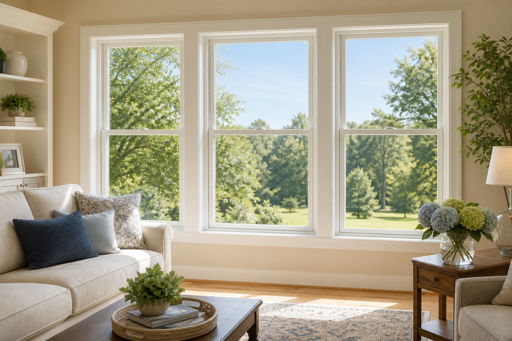

Aging & Benefits · February 18, 2026
Senior Home Improvement Grant for Windows (2026)

A new 2026 Senior Home Improvement Grant for Windows, coordinated alongside HUD and the Department of Energy's Weatherization Assistance Program, is making it easier for homeowners 65 and older to replace aging single-pane windows with ENERGY STAR-certified upgrades — in many cases at little or no out-of-pocket cost.
According to the U.S. Department of Energy, drafty and single-pane windows are responsible for 25 to 30 percent of residential heating and cooling energy loss. For seniors on fixed incomes, that can mean paying up to $1,200 per year in avoidable utility costs. Federal and state agencies have expanded three of the country's largest home weatherization programs for the 2026 fiscal year in response.
Eligible homeowners aged 65 and older — including those who receive Medicaid, VA benefits, LIHEAP, or other federal income support — can now apply for assistance through programs administered by the U.S. Department of Housing and Urban Development (HUD Section 504 Home Repair), the DOE Weatherization Assistance Program (WAP), USDA Rural Development, and state Low-Income Home Energy Assistance Program (LIHEAP) offices. Many states also coordinate funding through their local Area Agency on Aging under the Older Americans Act.
- ENERGY STAR-certified double-pane & triple-pane windows
- Low-E glass coatings to reduce heat transfer
- Vinyl or fiberglass frames with thermal break insulation
- Easy-open tilt-in sashes for one-hand operation
- Weather-tight caulking, sealing, and storm windows
Who qualifies in 2026
Most approved applicants are 65 or older, own and live in their primary residence, and either qualify for LIHEAP, their state's Weatherization Assistance Program, or fall within HUD's "very low-income" limits for their county. Disabled adults under 65 receiving federal disability benefits may also qualify, and veterans can apply through the separate VA Home Improvements and Structural Alterations (HISA) grant.
Program reviewers note that homes built before 1995 are especially likely to be approved, since older single-pane and aluminum-framed windows typically don't meet current ENERGY STAR or ADA easy-operation standards.
How seniors are applying
Most approved homeowners begin with a short eligibility screening that confirms age, residence, and household income or benefit status. Applicants who already receive Medicaid, LIHEAP, or VA benefits are generally pre-qualified on income and only need to confirm a few basic details about their home. The screening typically takes about two minutes online.
See if I qualify →Editor's note: This page is informational advertorial content. It is not affiliated with or endorsed by the U.S. Department of Housing and Urban Development, the U.S. Department of Energy, USDA Rural Development, the Department of Veterans Affairs, or any other government agency. Eligibility, approved upgrade categories, and benefit amounts vary by program, state, and available funds.